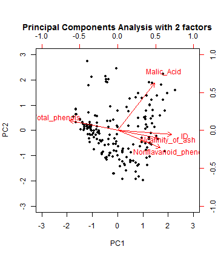

This shiny app intends to do a Principal Components or an Exploratory Factor Analysis on the famous Wine dataset. These techiques are statistical methods to reduce the number of variables in a database. To to so, the methods basically group the variables that are highly correlated in respect to some correlation measure.

 Gennaro Anesi
Gennaro Anesi